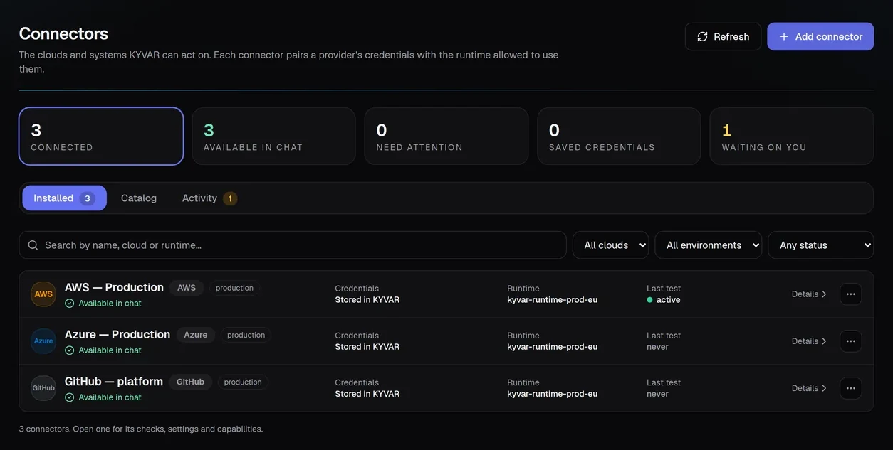
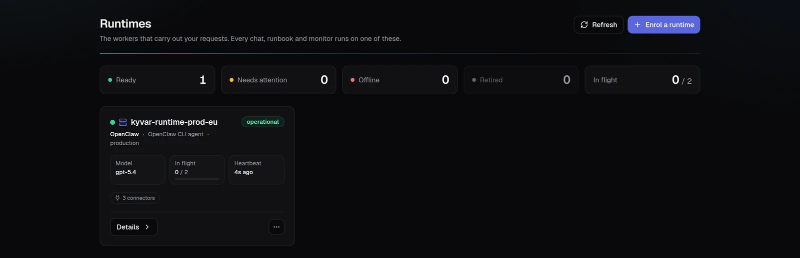
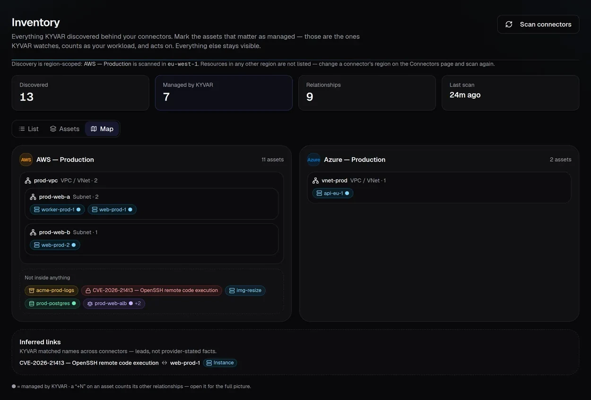

Cloud control plane.
Runtime where the work lives.
KYVAR separates governance from execution. The control plane decides what may happen; enrolled runtimes execute close to the target — in a cloud account, data center, branch, or isolated network.
Fleet · Audit · Desired state
The runtime polls KYVAR over HTTPS 443. No inbound firewall rule, port forwarding, DMZ, or VPN is required. Credentials can remain on the runtime inside the customer network.
PostgreSQL persists state, Redis coordinates work, and runtime heartbeats carry version and capability state. Docker Compose supports evaluation; Helm supports production clusters with HPA, managed data services, migration jobs, and TLS ingress.
- Bind each connector to one approved runtime
- Separate prod/dev, clouds, and network zones
- Use least-privilege target identities
- Keep model provider and data residency choices explicit
- Persisted runs and reconnect-safe workers
- Pre-deploy database backup and restore drill
- Health endpoints, structured logs, correlation IDs
- Prebuilt images and rolling releases
Fleet, runtimes, and enrollment.



An afternoon to evaluate.
A cluster for production.
Start with Docker Compose on one VM, prove the loop on a real workload, then graduate to Helm on your cluster — the governance model never changes.